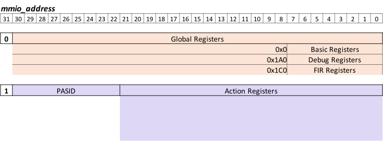

OC-Accel Registers
Registers bind the software and hardware together.
Memory map
The OpenCAPI3.0 device memory map concepts (BAR, MMIO Global, MMIO Per PASID, and also memory space) are specified with respect to OpenCAPI configuration space specification. Here is a conceptual memory map:

For OC-Accel:
- It only supports 1 AFU
- It only supports OpenCAPI3.0 C1 mode. MEM_SIZE = 0
- It supports 512 PASIDs (User Process ID associated with a request)
- It only uses BAR0
- Global MMIO Offset = 0, Size = 2GB
- Per PASID MMIO Offset = 2GB, Stride Size = 4MB
So the above memory map is specified to:

The settings can be found in:
hardware/oc-bip/config_subsystem/cfg_descriptor.v
hardware/hdl/core/oc_function_defines.vhd
So OC-Accel registers have two categories:
- SNAP Core registers, 8B, defined in Global MMIO space. Use
snap_global_read/write64()to access them. - Action Specific registers, 4B, defined in Per PASID MMIO space. Use
snap_action_read/write32()to access them.
Address Layout
The higher 32bits of tlx_afu_cmd_pa (Physical Address) should be matched with BAR0.
The lower 32bits, also called mmio_address, is processed in OC-Accel.

Global Register Summary
Warning
Registers with (?) need to be revised.
| mmio_address[30:8] | mmio_address [7:0] | Abbr. | Register Name |
|---|---|---|---|
| 0x0 | 0x00 | IVR | Implementation Version Register |
| 0x08 | BDR | Build Date Register | |
| 0x10 (?) | SCR | SNAP Command Register | |
| 0x18 (?) | SSR | SNAP Status Register | |
| 0x20 | CAP | Capacity Register | |
| 0x1A0 | 0x00 | Debug Register | |
| 0x08 | Debug Register | ||
| 0x10 | Debug Register | ||
| 0x18 | Debug Register | ||
| 0x20 | Debug Register | ||
| 0x1C0 | 0x00 | FIR Register | |
| 0x08 | FIR Register | ||
| 0x10 | FIR Register | ||
| 0x18 | FIR Register | ||
| 0x20 | FIR Register |
Action Register Summary
mmio_address[30:22] means PASID. That means, the first process opens the OC Device, it will attach PASID=0 when it calls mmio_action_read/write32(). Meanwhile, the second process, the third process may attach PASID=1 and PASID=2 when they access the OC Device. Each process has its own "process context", and when OC Device wants to visit the host memory, it has to know which "process context" it belongs to, that means, the OC device needs to send the PASID with its commands. This PASID takes AWUSER or ARUSER as the vehicle to transfer from Action wrapper to snap_core.
HDL design
| mmio_address [21:0] | Abbr. | Register Name |
|---|---|---|
| 0x00 | ACR | Action Control Register |
| 0x04 (?) | IER | Interrupt Enable Register |
| 0x10 | ATR | Action Type Register |
| 0x14 | AVR | Action Version Register |
| 0x20 (?) | CIR | Context ID Register |
| 0x30 -> end | User Defined |
HLS design
| mmio_address [21:0] | Abbr. | Register Name |
|---|---|---|
| 0x00 | ACR | Action Control Register |
| 0x04 (?) | ICR | IRQ Control Register |
| 0x08 (?) | IER | IP Interrupt Enable Register |
| 0x0C (?) | ISR | IP Interrupt Status Register |
| 0x10 | ATR | Action Type Register |
| 0x14 | AVR | Action Release Register |
| 0x100 (?) | CONTROL | sat + flags + seq |
| 0x104 | RET | Return Code |
| 0x108 | Reserved | |
| 0x10C | Reserved | |
| 0x110 - 0x17F | User Defined Job Data Registers (108 bytes) |
Definition for Global Registers
Basic: IVR
| Name | Offset | Description |
|---|---|---|
| Implementation Version Register | 0x00 | POR value depends on source for the build. Example for build based on commit with SHA ID eb43f4d80334d6a127af150345fed12dc5f45b7c and with distance 13 to SNAP Release v1.25.4: 0x0119040D_EB43F4D8 |
Bitwise definition
| Bits | Attributes | Description | |
|---|---|---|---|
| 63..40 | RO | SNAP Release | |
| 63..56 | RO | Major release number | |
| 55..48 | RO | Intermediate release number | |
| 47..40 | RO | Minor release number | |
| 39..32 | RO | Distance of commit to SNAP release | |
| 31..0 | RO | First eight digits of SHA ID for commit |
Build Date Register (BDR)
| Name | Offset | Description |
|---|---|---|
| Build Date Register | 0x08 | POR value depends on build date and time. Example for build on January 12th, 2017 at 15:27: 0x00002017_01121527 |
Bitwise definition
| Bits | Attributes | Description |
|---|---|---|
| 63..48 | RO | Reserved |
| 47.. 0 | RO | BCD coded build date and time |
| 47..32 | RO | YYYY (year) |
| 31..24 | RO | mm (month) |
| 23..16 | RO | dd (day of month) |
| 15..08 | RO | HH (hour) |
| 07..00 | RO | MM (minute) |
SNAP Command Register (SCR)
| Name | Offset | Description |
|---|---|---|
| SNAP Command Register | 0x10 | Send SNAP commands via this register |
Bitwise definition
| Bits | Attributes | Description |
|---|---|---|
| 63..48 | RW | Argument |
| 47..8 | RO | Reserved |
| 7..0 | RW | Command. Legal commands are: |
| 0x10 Exploration Done: Set Exploration Done bit in SNAP status register. Argument bits 63..52: Don't care. Argument bits 51..48: Maximum Short Action Type | ||
| 0x08 Reset: Reset the complete SNAP framework including all actions immediately. Argument: Don't care | ||
| 0x04 Abort: Abort current jobs and set accelerator to finished immediately (asserting aXh_jdone). Argument: Don't care | ||
| 0x02 Stop: Finish current jobs, then set accelerator to finished (asserting aXh_jdone). Argument: Don't care | ||
| 0x00 NOP |
SNAP Status Register (SSR)
- Offset: 0x18
- POR value: 0x0000000000000000
Bitwise definition
| Bits | Attributes | Description |
|---|---|---|
| 63..9 | RO | Reserved |
| 8 | RO | Exploration Done. This means that the ATRi setup is complete and the values are valid |
| 7..4 | RO | Maximum Short Action Type (number of Short Action Types - 1) |
| 3..0 | RO | Maximum Action ID |
SNAP Capability Register (CAP)
- Offset: 0x20
- Define the capability of the card
Bitwise definition
| Bits | Attributes | Description |
|---|---|---|
| 63..40 | RO | Reserved |
| 39..36 | RO | Minimum size for DMA transfers to/from Host. Value t means that minimum transfer size is 2^t B |
| 35..32 | RO | Data alignment for DMA transfers to/from Host. Value a means that transfers need to be 2^a B aligned |
| 31..16 | RO | Size of attached on-card SDRAM in MB |
| 15..9 | RO | Reserved |
| 8 | RO | NVMe enabled |
| 7..0 | RO | Card type: |
| 0x31 : AD9V3 | ||
| 0x32 : AD9H7 |
SNAP Debug Registers
Debug Clear Register (DBG_CLR)
| Name | Offset | Description |
|---|---|---|
| Debug Clear Register | 0x0080 | Counting the number of clock cycles since reset |
Bitwise definition
| Bits | Attributes | Description |
|---|---|---|
| 63..0 | RO | Counter counting the number of clock cycles since reset (afu open). This counter increments with the 250MHz PSL clock |
...
SNAP FIR Registers
Action Register Definition
TODO